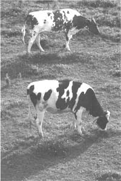
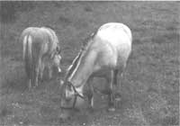
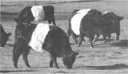

COUNTRY VET
A few years ago I realized a lifelong dream in Switzerland - I watched the cows trek from the valley stables to the mountain pastures. The big brown cows wore flowers around their necks and on their heads. They strode rapidly along the autobahns and through the village streets, cowbells chiming. The lead cow, wearing the largest flower arrangement and most decorative strapped bell, needed no one to guide her. She knew she was heading for green grass.
Seeing cows go to pasture always lifts my spirits after a long winter. I don't know whether it's due to my childhood experience or my Swiss ancestry. During my early years of practice, we were sometimes plagued in March with sick cattle, which would not respond until we could get them out on grass. I used to count the evenings when the beautiful sound of spring peepers would be heard. After hearing the frogs three or four times, I knew there would be enough grass on the south side of some hill, where a sick cow could be turned.
Today we have better knowledge of harvesting roughage and feeding/caring for cattle. We don't experience problems with acetonemia, displaced abomasum, and slow recovery of sick animals which plagued us 40 years ago. I now read of dairy farmers who return to pasture management from the extreme of zero pasture. But the magic of green grass is not always the answer - sometimes it causes problems. From the questions that MOTHER receives, it is clear that not all of our readers are able to avoid late winter health problems with their livestock. Let's address a few questions:
Q. Early last spring, we turned our family Jersey cow and our small beef herd of Hereford out onto winter wheat before the grass pasture was ready. Two days later the milk cow went down and into a coma, as if she had milk fever. I called our veterinarian, who saved her life with intravenous calcium and magnesium treatment. She said the cow did not have milk fever, but a similar disease called "grass tetany," which is caused by too little magnesium. She also said that the beef cattle could get the disease. At her suggestion, we pulled them off the wheat and turned them to the grass pasture, supplemented with some hay. The veterinarian also told me it was possible to prevent grass tetany by fertilizing with magnesium, but one could never be entirely sure. We'd like to be able to pasture wheat again this year. Is there a safe way to do it?
A. There are so many factors known and unknown about grass tetany that one can never be sure about prevention or treatment. It affects cattle and sheep, usually those in heavy lactation. It is known even in steers, and can be fatal if not detected in time. Most importantly, it is seen in cattle raised on highly fertilized pasture, particularly where a lot of nitrogen is used. Wheat pasture is most apt to cause it, but I have seen it on wild unfertilized pasture during cold, wet springs. Stress - such as too many hours without feed - is another contributing factor. Cows prone to milk fever, such as your Jersey, are also more prone.
It is surprising how both
cattle and sheep will
leave nice green pasture
to chew on dry hay.
To prevent grass tetany, spray pasture with a 2% magnesium sulphate solution (epsom salts, 2 pounds to 12 1/2 gallons of water) just before turning animals out. Liming with high magnesium lime during the fall is another solution. Remember that young, fast-growing green plants are low on magnesium.
You might be able to prevent grass tetany on wheat this spring by turning only non-milking animals out to chew it down first. Or turn the milking animals out for only a few hours at a time, making sure their bellies are full of dry hay first. With a small herd, try throwing piles of dry hay around the pasture for the first week. It is surprising how both cattle and sheep will leave nice green pasture to chew on dry hay. As I think back on cases of grass tetany I've seen, most occurred during wet, cold springs when cattle were suddenly put on pasture both day and night from barn feeding.
Looking ahead, sow winter rye instead of wheat next fall. Rye makes good pasture in spring too, and the incidence of grass tetany is less than on wheat. It is important to know that grass tetany can occur in cattle and sheep even on good pasture, particularly those in full milk production during cold, wet springs. Watch animals closely for such early symptoms as staggering or weakness before they go down. If they do go down, get veterinary help immediately. Ordinary milk-fever treatment won't help, and mixtures containing potassium and/or phosphorous can kill.
Q. Last fall we were given Cocoa, a beautiful Shetland pony mare to keep for the winter. At the time, the owner gave us instructions on care and feeding. Although he intended to pick Cocoa up in the spring, a letter came in January saying he would not return. The pony was ours to keep. A postscript on the letter said "Don't turn Cocoa out to pasture until the cows have chewed it down a bit." What is he referring to?
A. Most ponies and many heavy draft-type horses, will founder (develop acute laminitis) with the sudden change to lush green pasture. The condition also occurs if they are over-fed grain or have unlimited access to fermented feeds, such as silage.
Founder is a condition in which the space between the sensitive and the insensitive part of the hoof becomes engorged with blood. The reason why is not completely understood. The affected animal will appear to be "glued to the ground" or severely lame, carrying its weight around on its rear legs. At first glance, one might think the rear feet are affected, but it's usually the front feet. The hooves will feel hot, and one can detect a definite pulse on the rear outside of the pastern bone. If not properly cared for, permanent lameness will develop. Such animal grow long narrow hooves, curved up in front like sled runners.
Preventing "grass founder," or any form of founder, is critical. Don't turn ponies, draft horses, or even light horses with draft-type characteristics from barn feed to unrestricted lush grass pasture. Avoid sudden changes in feeding, and reduce grain intake on horse heavily worked and laid up for a day without exercise. Don't give a hot horse grain, and only give your horse small amounts of water at a time until it is cooled out.
For first aid, think cold. Either stand the horse in cold water or wrap its feet with burlap bags soaked in cold water. Be sure to get veterinary help immediately. Some acute cases of founder will be lost regardless of treatment, so make prevention top priority. Until a few years ago, many horse with chronic laminitis were permanent cripples. Today skilled farmers and veterinarians, using painkillers, hoof surgery, and epoxy fillers all help greatly, and bring some horses back to complete functioning.
Q. Last spring our family cow stopped eating her grain, just a few weeks after we turned her out to pasture. I thought this was because she was so full of grass. She came in one evening with her udder nearly empty, and only a few squirts of thick milk came out of each quarter. One neighbor said she had mastitis and suggested I treat her with mastitis syringes from the feed store. I did this, but her udder stayed soft and slack. She didn't give enough milk, so I dried her off. A few weeks later she aborted a five-month calf. We fattened her and butchered her last fall, and bought a nice little Jersey for milk.
Another neighbor, who used to dairy farm years ago, told me the first cow didn't have mastitis since her udder was not hard and swollen. He said it was "buttercup poisoning," common in areas with lots of blooming buttercups. Our new Jersey cow is milking fine, and has become a family pet. Soon we will run out of hay, and will need to use the pasture where the buttercups grow. Any suggestions?
A. It sounds as though your first cow had a case of leptospiroses infection. "Lepto" is about the only generalized disease that a lone cow will come down with despite direct/indirect contact with other cattle. The causative agent is not buttercups, but a bacteria carried by any number of wild and domestic animal species. The organism is present in the urine of recovered individuals, and can live outside their bodies in still water above 65°F.
Leptospira organisms can reach a small pond or puddle from the urine of a carrier animal. If your animal drinks the water, it becomes susceptible. Although the organism will most likely die when your animal ingests it, it is infective if sprayed into your animal's nostril or eye.
Symptoms include fever, diminished appetite, and reduced milk production. After a few days of the disease, what little milk the cow does have will be thick. Unlike mastitis, there will be no swelling or hardness of the udder. Appetite gradually returns, but milk production usually stays very low. During the fever stage of the disease, the fetus in a pregnant cow will die. However, it is not likely to be aborted until weeks or even months go by.
Anyone who owns livestock should
have a thermometer and a
speaking relationship with a
local veterinarian
Prevention of lepto is accomplished by immunizing with a bacterin for the particular lepto in your area. Your local veterinarian will know which bacterin is best to administer, as well as the best time of year to do so. In areas where lepto is a big problem, one dose of bacterin is usually given prior to pasture season, and another in late summer. A third dosage is sometimes given in fall (prior to stabling), depending on housing and herd size.
Anyone who owns livestock should have a thermometer and a speaking relationship with a local veterinarian familiar with livestock. By having a thermometer, you could have checked your cows temperature when she first refused to eat the grain. After determining fever, you could have called your vet and started early antibiotic treatment. This would have saved the cow, her milk production, and probably the calf she was carrying.
|
 |
 |
 |